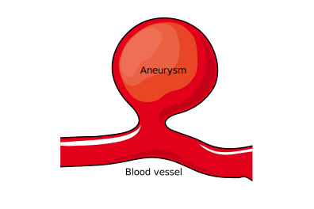

Introduction to brain aneurysms
What is an aneurysm?
An aneurysm is a bulge in the wall of a blood vessel caused by a small area of weakness. Aneurysms can occur in various parts of the body, but one of the most common locations is the brain. These are known as intracranial or cerebral aneurysms. Some aneurysms have the potential to rupture which can result in severe bleeding around the brain which is called subarachnoid haemorrhage.
Brain aneurysms primarily affect middle aged and older adults with a higher prevalence in women. They are extremely rare in children. The cause of aneurysms is unknown in most cases, although some individuals have a genetic predisposition to developing them. Aneurysms can also rarely develop after certain infections or trauma.

What is the prevalence of brain aneurysms?
Brain aneurysms are present in about 3% of the population (3 in 100 people) [1]. There are some factors that increase the risk of developing a brain aneurysm [2]:
Family history of brain aneurysm or subarachnoid haemorrhage (bleeding around the brain).
Atherosclerosis: This is a condition characterised by the buildup of plaque in the arteries. It is associated with an increased risk of brain aneurysms.
Smoking
High blood pressure
Female gender: Women have a higher risk of developing brain aneurysms compared to men.
Age: The risk of brain aneurysms may increase with age.
Autosomal Dominant Polycystic Kidney Disease (ADPKD): This is a genetic condition leading to the development of multiple cysts in the kidneys. It is also associated with brain aneurysms.
Sickle cell disease: This is a disorder of the red blood cells that is also associated with brain aneurysms.
Are brain aneurysms dangerous?
Many aneurysms are benign: they cause no symptoms and will never rupture. However, other aneurysms do rupture causing life-threatening bleeding around the brain, called subarachnoid haemorrhage. Rarely aneurysms can cause symptoms without rupturing, such as reduced vision, double vision, seizures, or strokes. These effects are caused by inflammation or pressure on the surrounding brain structures, or due to the development of blood clots. Unfortunately there is no test that can accurately identify aneurysms that will go on to rupture, although we do have some idea of factors which make certain aneurysms more likely to do so.
References
Vlak MH, Algra A, Brandenburg R, Rinkel GJ. Prevalence of unruptured intracranial aneurysms, with emphasis on sex, age, comorbidity, country, and time period: a systematic review and meta-analysis. Lancet Neurol. 2011 Jul;10(7):626-36.
Juvela S. Prevalence of and risk factors for intracranial aneurysms. Lancet Neurol. 2011 Jul;10(7):595-7. doi: 10.1016/S1474-4422(11)70125-9. PMID: 21641283.